メモリに乗り切るか
モデルサイズ — AIが身につけているものの「器」
ローカル環境でモデルを動かせるかを左右する最初の数字が、モデルサイズです。「32B」「70B」「753B」のBは、10億個のパラメータを表します。パラメータとは、学習によって調整された膨大なつまみのようなものです。モデルは、このつまみの組み合わせによって、言葉の使い方、知識、推論の癖、文章のスタイルなどを身につけています。
ただし、パラメータ一つに事実が一つ保存されているわけではありません。モデルサイズは「覚えている事実の件数」よりも、「どれだけ複雑なパターンを表現できる器を持っているか」に近い数字です。大きいモデルほど多くの知識や能力を持つ傾向はありますが、単純に二倍大きければ二倍賢い、という関係ではありません。
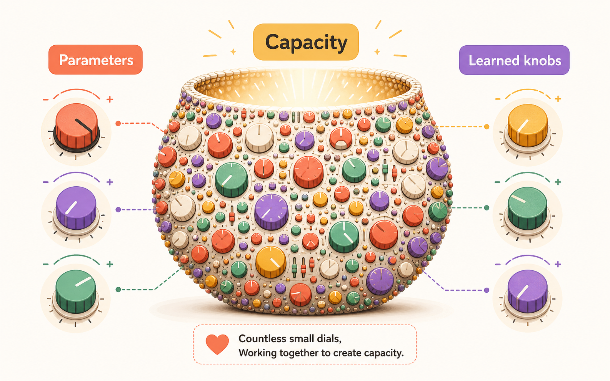
量子化 — 同じ絵を、少ない階調で保存する
大きなモデルを小さなメモリに収める方法が、16bit・8bit・4bitの違いです。bit数は、一つひとつのパラメータをどれだけ細かく表現するかという数字で、絵にたとえると、構図やピクセル数を変えずに、色の階調だけを減らして保存するようなものです。16bitは細かなグラデーションを残しやすく、8bit、4bitと下げるほど数値を大まかな段階へ丸めます。この処理を量子化と呼びます。
理論上、32Bモデルの重みは16bitなら約64GB、8bitなら約32GB、4bitなら約16GBです。70Bモデルなら、それぞれ約140GB、70GB、35GBになります。つまり、bit数を半分にすると、重みを置くための容量もおおむね半分になります。
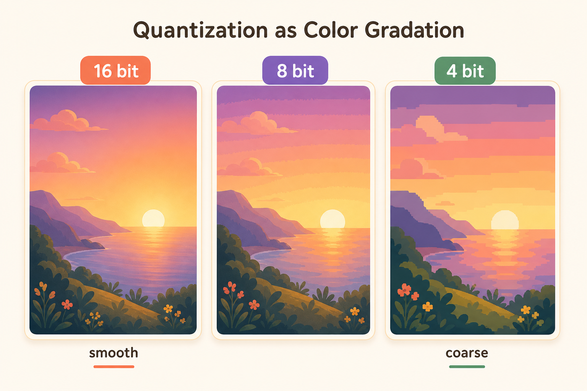
DenseとMoE — 全員で働く店と、専門家を呼び分ける街
同じ「巨大モデル」でも、必要な容量と計算量が一致しないことがあります。Denseモデルは、注文が一件入るたびに、基本的に店のスタッフ全員が仕事に参加する方式です。70BのDenseなら、各トークンを作る際に原則70B分の重みが計算に関わります。
MoEは「Mixture of Experts」の略で、たくさんの専門家を抱えた街のような仕組みです。依頼が来ると案内係が内容を見て、その仕事に向く一部の専門家だけを呼びます。料理の相談なら料理チーム、コードならコードチーム、と振り分けるイメージです。
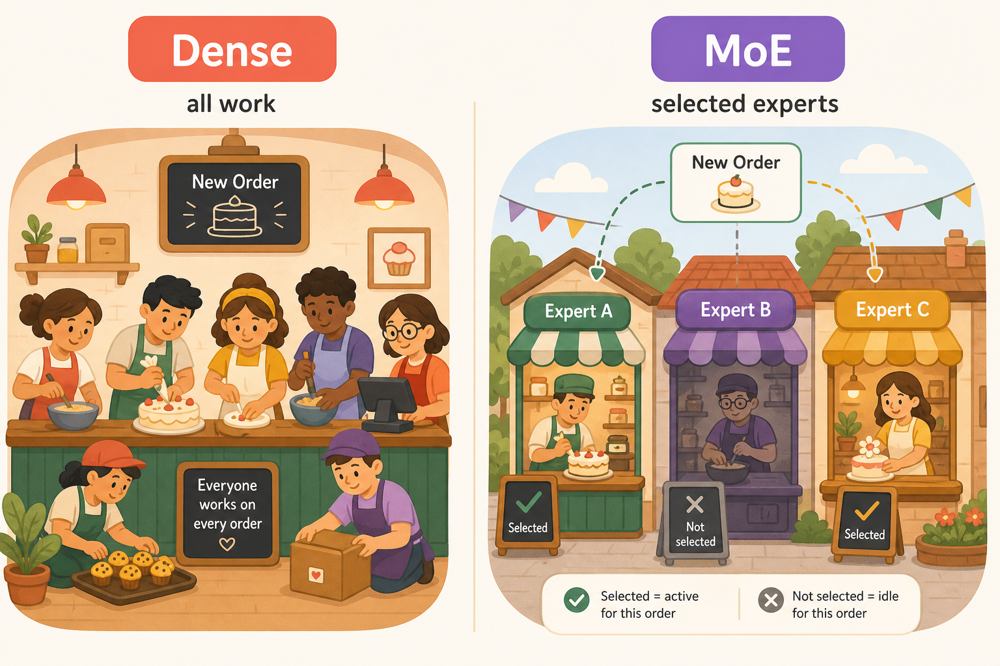
ここで二つの数字を分けて見ます。総パラメータ数は、街全体を保存するための広さに関係します。Active parametersは、一件の仕事で実際に呼び出される専門家の量に関係します。GLM-5.2は総パラメータ753BのMoEで、256のExpertから1トークンにつき8つを選ぶ構成です。1トークン当たりのActiveは約40Bとする報告（二次情報の概算）がありますが、計算量が40B級に近くても、置く場所としては753B分の重みが必要です。使わない専門家を、その都度倉庫から消してよいわけではありません。
コンテキスト — 128Kと1Mは、机の広さの違い
AIが一度の仕事で参照できる情報量が、コンテキストサイズです。コンテキストは、モデルの前に広げた机です。この机には、システムからの指示、ツールの説明、過去の会話、会話の要約、検索してきた資料、今回の依頼、ツールの実行結果、そしてこれから書く回答までが載ります。考えるモデルでは、画面に出ない思考用トークンも同じ机を使います。
128Kと1Mの違いは、机の面積が公称でおよそ8倍になることです。1Mなら大量の資料を一度に置けますが、机が広ければ仕事が自動的にうまくなるわけではありません。資料を並べるほど読み込み時間が延び、作業メモ（KVキャッシュ）が増え、必要な情報を見つけにくくなることがあります。
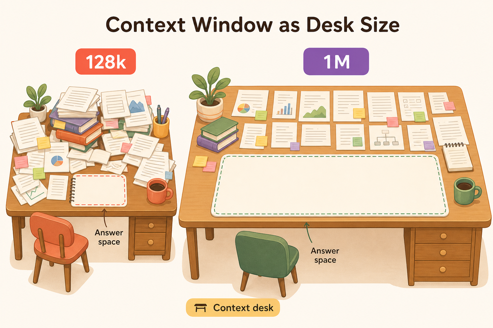
KVキャッシュ — 会話中だけ増えていく作業メモ
長い会話や同時利用人数がGPUメモリを圧迫する原因が、KVキャッシュです。AIは新しいトークンを書くたびに、直前までの文章との関係を確かめます。過去の文章を毎回最初から計算し直すと遅いため、計算済みの要点をGPU上に残します。これがKVキャッシュで、長期記憶ではなく、作業中だけ使う大量の付箋に近いものです。
KVキャッシュは会話ごと、生成中の文章ごとに必要です。モデル本体の重みは複数人で共有できますが、作業中の付箋は利用者ごとに別々に用意します。Qwen3-32BをBF16で動かす例では、8Kトークンの会話で約2GiB、32Kなら約8GiB。10人が同時に32Kを生成すれば、付箋だけで約80GiBになります。GLM-5.2は圧縮方式（MLA）を使い、1人分でも128Kで約10.97GiB、1Mで約87.75GiBです。「1M」は巨大な資料を読める能力であると同時に、一人が非常に大きな作業机を占有する可能性でもあります。
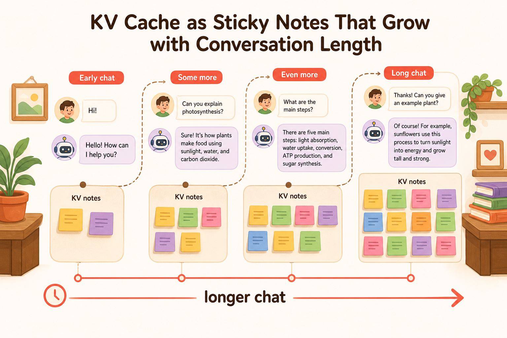
tok/sec その1（速さ）
tok/sec — 文章が伸びる速度を、秒で捉える
AIの速さを体感に置き換える数字が、tok/secです。1秒間に何トークン生成できるかを表します。トークンは文字数と完全には一致しないため、tok/secだけでは長さを直感しにくいのですが、「同じ長さの回答が何秒で出るか」に直すと意味が見えます。
| 速度 | 600トークンの回答 |
|---|---|
| 7 tok/s | 約85.6秒 |
| 25 tok/s | 約24秒 |
| 50 tok/s | 約12秒 |
| 100 tok/s | 約6秒 |
| 1,000 tok/s | 約0.6秒 |
速度比較では「何tok/sか」だけでなく「何トークンの回答を出したか」をセットで見ます。短い一言なら差が目立たなくても、長文の企画書や大量の思考を伴う仕事では、同じ速度差が大きな待ち時間になります。
読む時間と書く時間 — Prefill と Decode
同じAIでも依頼内容によって待ち方が変わります。モデルが最初に依頼文や資料を読み込む処理をPrefillと呼びます。長いブリーフを渡されたデザイナーが、制作前に資料へ目を通す時間に相当し、最初のトークンが現れるまでの待ち時間に含まれます。その後、回答を一トークンずつ書く処理がDecodeです。よく見るtok/secは、この「書いている最中の速さ」を指すことが多くあります。
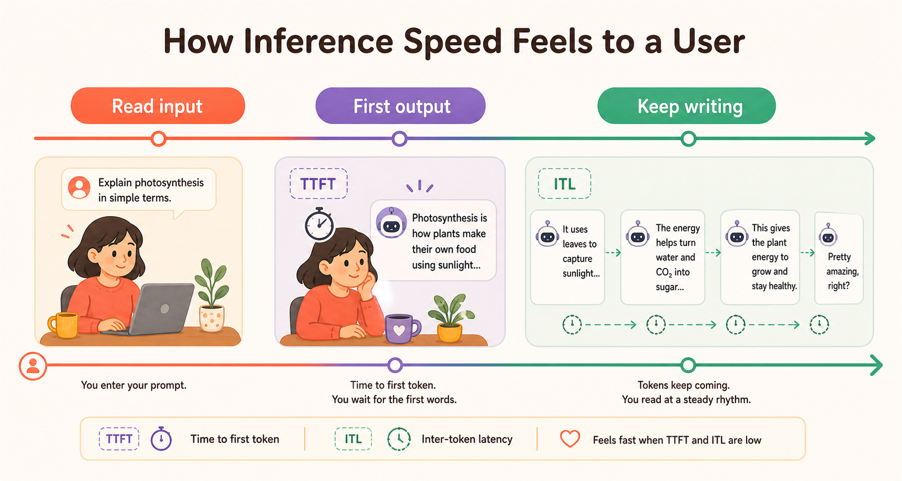
メモリ速度
- 演算器は料理人、重みとKVキャッシュは材料に当たります。
- 毎皿ごとに大量の材料を運べば、提供は遅くなります。
- 通路を広げるか、毎回運ぶ材料を小さくするのが近道です。
参考: Qiita「なぜLLMは遅いのか？ KV CacheとSpeculative Decodingの数学的理解」
倉庫の広さと、搬入口の速さ
「載るのに遅い」「載らないのに速い」という違いを理解する鍵が、容量と帯域の区別です。メモリ容量は倉庫の広さで、大きなモデルや多くの付箋を保管できるかを決めます。メモリ帯域は、倉庫から作業台へ一秒間にどれだけ運べるかという搬入口の速さです。
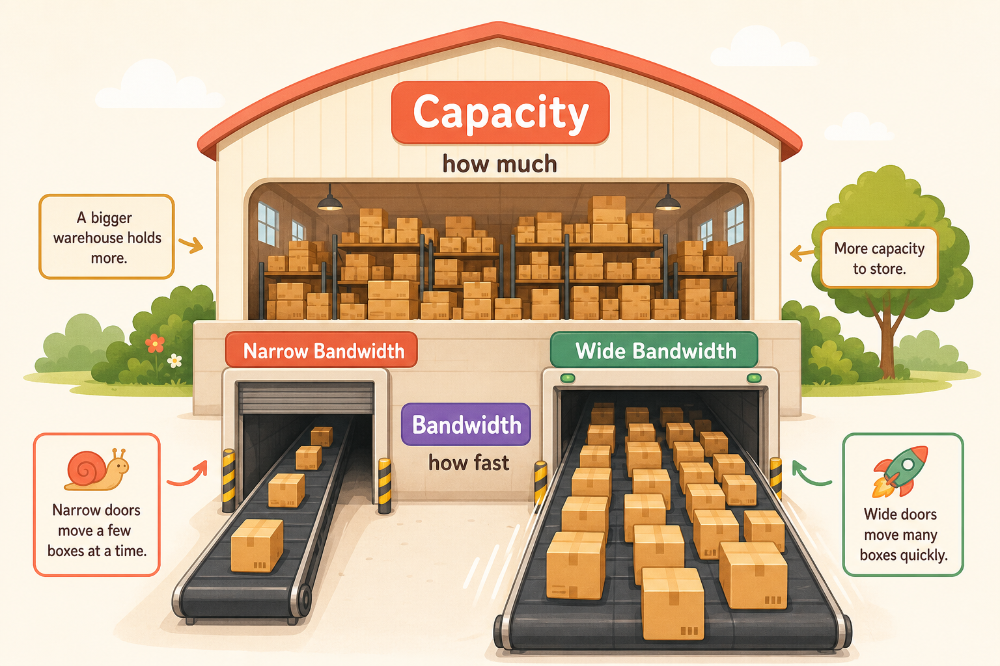
一つのトークンを書くたびに、AIはモデルの重みを大量に読み出します。コンテキストが長ければ付箋（KV）の読み出しも加わります。ごく粗い目安は「一秒間に運べる量 ÷ 一トークンで読む量」。つまり帯域が大きいほど速く、重みやKVが大きいほど遅くなります。長いコンテキストは机を占有するだけでなく、新しい一文字ごとに過去の付箋を確認する手間も増やすので、「入るか」と「速いか」の両方に効きます。短い問い合わせには小さな机、長文調査には大きな机、と割り当てると、同時に多くの人を快適に扱えます。
tok/sec その2（GPU比較）
大容量の機械と、速い機械は同じではない
代表的な機械には、それぞれ個性があります。容量だけで選ばないために、容量と帯域の両方で見比べます。
| 機械 | 容量 | 帯域 | ひとことで言うと |
|---|---|---|---|
| RTX 5090 | 32 GB | 1,792 GB/s | 小さいが速い |
| RTX 3090 | 24 GB | 936 GB/s | 小さめ・ほどほど |
| A100 80GB SXM | 80 GB | 2,039 GB/s | 容量と速さを両立 |
| DGX Spark | 128 GB | 273 GB/s | 大きいが運搬は穏やか |
| Mac Studio M3 Ultra | 512 GB | 819 GB/s | 非常に大きく速度は中間 |
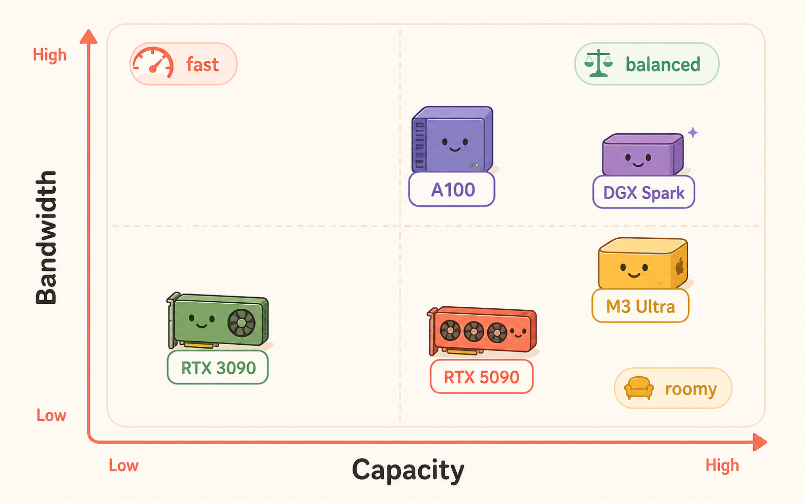
同じモデルを載せたときの速度感
GPUごとの生成速度を大まかに比べるため、帯域から求めた理論上の天井値を使います。次の数字は、利用者一人・短いコンテキスト・4bitで、付箋や実行ソフトの負担を無視した値です。実測予想ではなく「これより上へは行きにくい」屋根の高さです。
| 機械（4bit, 一人, 短文） | 8B | 32B | 70B |
|---|---|---|---|
| RTX 5090 | 448 | 112 | 載らない |
| RTX 3090 | 234 | 58.5 | 載らない |
| A100 80GB SXM | 510 | 127 | 58.3 |
| DGX Spark | 68.3 | 17.1 | 7.8 |
| Mac Studio M3 Ultra | 205 | 51.2 | 23.4 |
単位は tok/s（理論上の天井値）。
ローカルAIのテンプレート
忘れっぽい職人と、記憶を管理する司書
ローカルAIを長く使える製品にする基本形が、モデルと記憶の分離です。モデル本体は、一般知識と技能を身につけた職人ですが、新しい会話や案件情報を自分の重みにその都度書き込むことはしません。仕事が終われば、今回の机に載っていた資料も基本的には失われます。
そこで、モデルの外側に「司書と書庫」を置きます。書庫には、会話の原文、現在の作業状態、ユーザー設定、過去の決定事項、検索用の索引、作成した文書や画像を保存します。司書は依頼のたびに書庫を調べ、今回必要なものだけをモデルの机へ並べます。モデルは交換可能な制作担当者で、案件の記録はモデルとは別の場所に残ります。
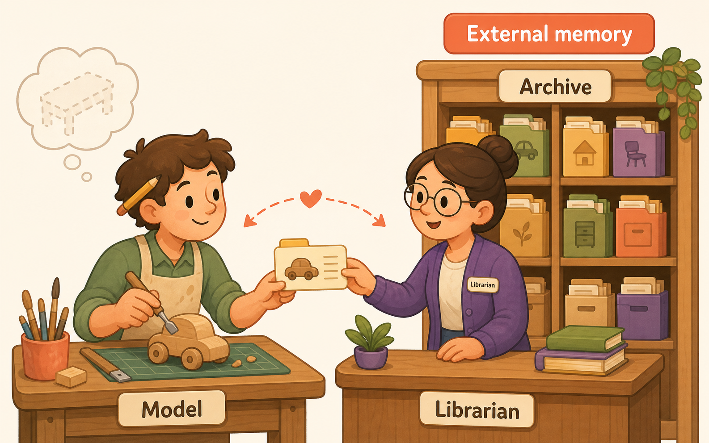
記憶
「覚えている」ように見える裏側
クラウド型AIの会話継続も、基本は「以前の会話を保存し、次の依頼で必要な内容を取り出し、現在のコンテキストへ入れ、同じモデルで回答する」流れです。会話のたびに巨大モデルを再学習しているわけではありません。
| 提供者 | 会話のつなぎ方 | 保持の目安 |
|---|---|---|
| OpenAI | previous_response_id / Conversations API | Responseは30日／Conversation項目はTTL対象外 |
| previous_interaction_id | 有料55日／無料1日 | |
| Anthropic | 毎回履歴を送る（ステートレス） | 保存先は開発者側 |
見た目は同じ「前の話を覚えているAI」でも、履歴をプロバイダーが持つ方式と、自分たちで持つ方式があります。この違いは、削除・監査・保持期間・機密情報の置き場所を決めるときに重要です。
ナイーブ → 要約 → RAG → モダンな記憶
最も簡単な実装は、過去の会話を全部保存して毎回送る方式です。数回なら分かりやすいのですが、会話が長くなるほど読み込みが遅くなり付箋も増え、撤回された案まで混ざって必要な情報を見つけにくくなります。打ち合わせのたびに過去の議事録を段ボールごと運び込むようなものです。
改善策の一つが要約です。古い会話を短くまとめ、直近だけ原文で残します。ただし要約は情報を削るので、当時は重要でなかった細部が後で必要になることもあります。要約だけを正本にすると、元の発言へ戻れなくなります。もう一つがRAGで、保存した文書から意味が近い箇所を検索して持ってきます。図書館の検索端末に近く、似た案件や関連資料を探すのに向きます。ただし「契約終了日はいつか」のような正確な値を、類似検索だけに任せるのは危険です。
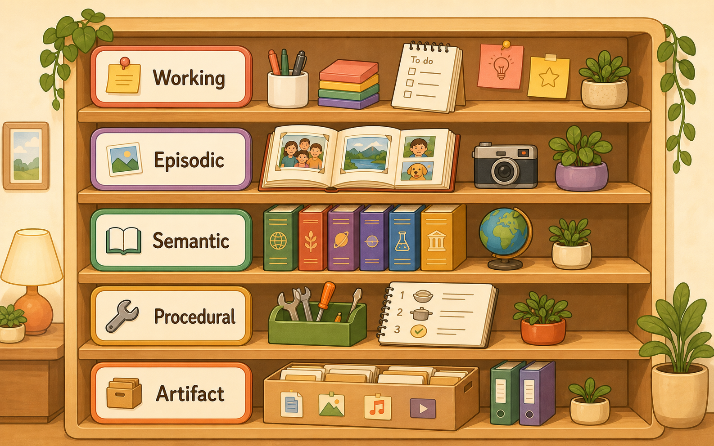
モダンな設計では、現在の作業はWorking、過去の出来事はEpisodic、ユーザーやプロジェクトの事実はSemantic、手順はProcedural、成果物はArtifact、と棚を分けます。氏名・期限・権限など完全一致が大事な情報は構造化データベースへ、似た事例はSemantic Indexへ、制作物はArtifact Storeへ。回答時は、直近数ターン・更新された要約・今回関係する事実・検索結果・現在の作業状態だけを選びます。
reasoning（考える時間）
画面には出ない、AIの下書き
Reasoningを行うモデルは、最終回答の前に、問題を分解したり候補を比較したりします。この下書きで難しい仕事の成功率が上がることがありますが、すべての依頼で長く考えればよいわけではありません。大事なのは、画面に表示されないReasoningも一トークンずつ生成されていることです。表示が500トークンでも、その前に4,000トークン考えていれば、合計約4,500トークンを生成しています。非表示にしても計算時間は消えません。
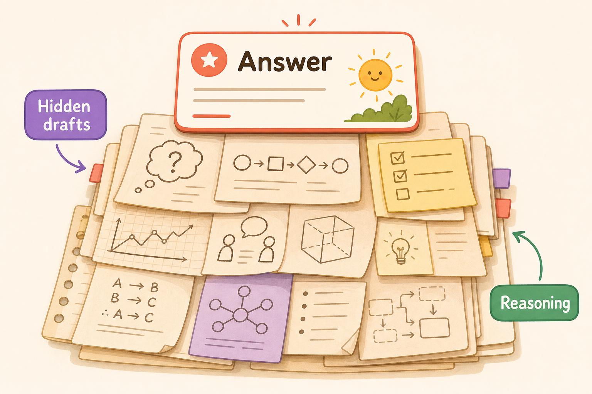
短い回答なのに、長く待つ理由
公式資料の単一例では、OpenAIの例はReasoningが1,024トークン、表示出力が約162トークンでした。合計1,186トークンで、表示部分だけの約7.3倍。50 tok/sなら、表示だけは約3.24秒でも、Reasoning込みでは約23.72秒です。Geminiの例はThought 297・表示171で約2.74倍（約3.42秒→約9.36秒）。これらは平均ではなく個別例ですが、見える文章量だけで応答時間を予測すると大きく外れることが分かります。
| 考える量 | 完了(50tok/s) | 増える付箋(KV) |
|---|---|---|
| 0 | 約10秒 | 0 |
| 1,024 | 約30.5秒 | 約0.25 GiB |
| 4,096 | 約1分32秒 | 約1 GiB |
| 16,384 | 約5分38秒 | 約4 GiB |
（表示回答500トークン・50 tok/sの例）考える時間はコンテキスト（机）も使います。40,960トークンのモデルへ、入力32,000＋Reasoning 8,000＋回答1,000を求めると合計41,000で上限超過。思考の途中で止まる、回答が極端に短くなる、といったことが起こり得ます。
GLM-5.2 / Kimi-2.7 / Opus-4.8
得意分野の違う三人として見る
以下は2026年6月時点のだいたいの目安で、性能傾向はコミュニティによる非公式評価です（公式の確定順位ではありません）。GLM-5.2は、企画を組み立てて一度に大きな成果物を作るプランナー寄りと評価されます。出荷が確認されているKimi K2.7は「Kimi-K2.7-Code」というコーディング特化型で、自律的な長時間タスクやバグ修正に強い性格とされます。Claude Opus 4.8はクローズドで内部構造は非公開、コミュニティでは最難問での性能上限として扱われることが多いモデルです。
| 項目 | GLM-5.2 | Kimi K2.7-Code | Claude Opus 4.8 |
|---|---|---|---|
| 規模 | 753B（MoE） | 約1T（MoE） | 非公開 |
| 机の広さ | 1,048,576 | 262,144 | 既定1M（出力128K） |
| 自前で持てる? | ○ 公開(MIT) | ○ 公開(改変MIT) | × API専用 |
自前で持つと、何台のGPU・いくら？
MoEは一度に使う専門家が少なくても、全Expertの重みを常に置いておく必要があります。下は 推定（パラメータ数×1パラメータの容量×1.2〜1.3倍の余裕）です。
| モデル | 4bitで必要なGPU(推定) | FP8で必要なGPU(推定) |
|---|---|---|
| GLM-5.2 | H100×6（1ノード） | H100×12（2ノード） |
| Kimi K2.7 | H100×8（1ノード） | H100×16（2ノード） |
一人で使う場合でも、GPUを一枚だけ借りることはできず、全重みを置く1ノード分が必要です。推定 8×H100ノードは、AWSで月約4万〜7.2万ドル、GCPで約6.4万ドル、Azureで約7.2万ドル。利用者一人のために24時間空けておくのは非常に非効率です。GLM-5.2のホスト型API（借りて使う）は参考値で100万トークン当たり入力約1.40ドル・出力約4.40ドル（報道二次）、Opus 4.8は入力5ドル・出力25ドル（要確認）。特別な要件がなければ、一人利用ならAPIのほうがふつうずっと安く済みます。
| 100人・本番の月額 推定 | クラウド2ノード | 自社購入(3年償却) |
|---|---|---|
| 目安 | 約8万〜14.4万ドル | 約2.5万〜2.6万ドル |
24時間ずっと使い続けるなら、自社購入はクラウドの約3〜5分の1の月額になる可能性があります。ただし調達・設置・故障対応・運用を自分たちで負担します。判断は「GPU単価が安いか」だけでなく、短期や変動が大きいならAPI、独自改造したいならセルフホスト、高稼働を維持できるなら自社設備、と運用の形で考えます。
Fugu と Fusion
チームを作るAIと、専門家会議を開くAI
複数のAIを組み合わせる方式が二つあります。Fugu（Sakana AI）は、一つのAPIとして使えるマルチエージェント・オーケストレーションです。依頼を受けると、一人で解くか専門家チームを編成するかを自分で判断します。制作会社のプロデューサーが案件ごとにコピーライター・デザイナー・リサーチャーを呼び分けるイメージで、最後は一つの成果物にまとめます。
Fusion（OpenRouter）は、複数の専門モデルへ同じ問いを並列に投げ、judgeが比較します。一つの答えに混ぜるのではなく、合意点・矛盾点・各モデルの見落としを構造化して返します。専門家会議の議事録を作る方式に近いものです。
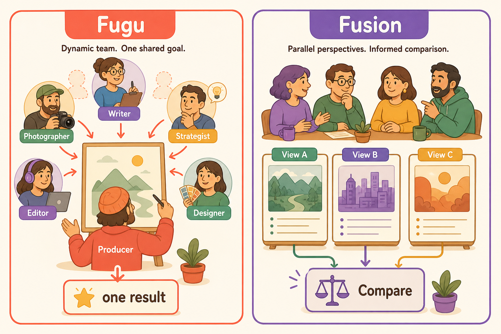
どう使い分けて、いくらかかるか
Fuguは、依頼の分解や担当者選びまで自動化し、最終的に一つの回答で受け取りたい場合に向きます。特定の外部モデルに縛られたくない、障害中のサービスを動的に避けたい本番と相性が良く、複数エージェントを使っても料金を予測しやすいのが特徴です。Fusionは、ブランド変更・契約判断・経営分析など、「一つのもっともらしい答え」より意見の分布を見たい重要な意思決定に向きます。多数決ではなく、少数意見や矛盾を残すことに価値があるので、全チャットで常時使うより、間違えたときの影響が大きい問いだけで起動するのが合理的です。
ハーネスが主役
AIモデルは頭脳、仕事を進める仕組みではない
モデル単体は、受け取った文章から次の言葉を予測する部品です。どこからファイルを読むか、どのコマンドを実行するか、危険な操作を止めるか、失敗後に再試行するかは、モデルだけでは管理できません。これらを担うのが、モデルの周囲にあるハーネスです。
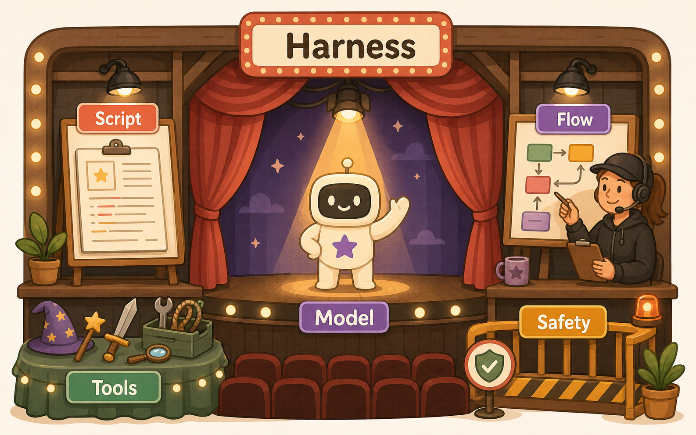
見る→行動する→結果を見て続ける
チャットモデルが複数ステップの仕事を完了できるのは、ハーネスがループを回すからです。まずハーネスが指示や状況をモデルへ送り、モデルは文章で答えるか「ファイルを読む・編集する・コマンドを実行する」などの道具呼び出しを返します。ハーネスはそれを実際に動かし、結果を次の依頼へ足します。これを繰り返し、道具呼び出しが止まって最終回答が出るまで続けることで、「調べる・直す・確認する」という一連の仕事になります。モデルが賢くても、必要な資料が渡されなければ正しく動けません。何を、どの順で机へ載せるかもハーネスの仕事です。
「お願いする」ことと「物理的にできる」ことを分ける
AIに道具を持たせても事故を起こしにくくするため、二重の安全策があります。権限ルールは「この操作は自動で許可するか、人間へ確認するか、禁止するか」を決めます。大事なのは、この判断をモデルの良心に任せないこと。Claude Codeの公式説明でも、権限を強制するのはモデルではなくClaude Code側だと明記されています。サンドボックスは、たとえ操作が実行されても触れられる場所をOSレベルで限定します。承認が「入ってよいですか」と聞く受付なら、サンドボックスは鍵のかかった壁です。
会話を覚えることと、現場を動かすことは別
「APIが会話を覚えるなら、手元の仕組みは要らないのでは？」と思うかもしれませんが、別の話です。OpenAIのResponses APIはサーバー側に状態を持て、応答を30日保持し、IDを渡せば新しい入力だけで会話をつなげます。AnthropicのMessages APIはステートレスで、手元のツールが履歴を毎回送ります。どちらにしても、サーバーが会話を覚えていても、手元のファイルを読む・編集を保存する・コマンドを実行する・権限を確認する・範囲を制限する、といった仕事はしません。サーバーの記憶は履歴の再送を減らせますが、ハーネスそのものを置き換えるものではありません。